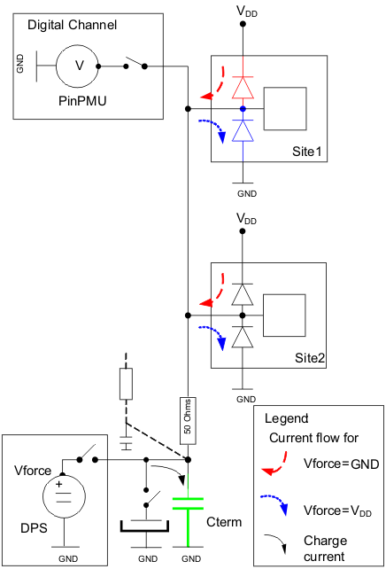
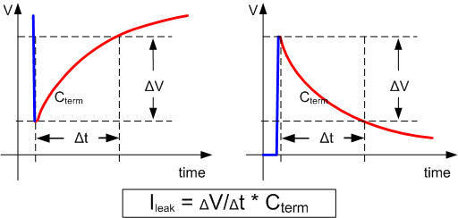
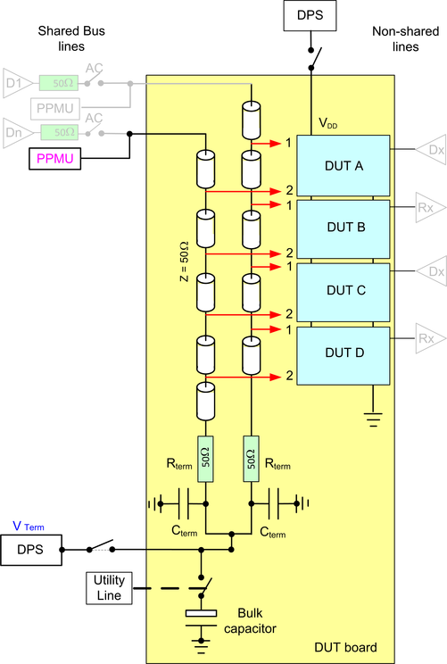

Leakage test for shared lines
The leakage test for shared lines differs from the leakage test used for non-shared lines.
With non-shared lines the individual pin's leakage current is measured using the pin PMU in force voltage, measure current mode. With shared lines you only can measure the sum of currents flowing for all input pins that are tied together via the shared lines. If the shared lines are parallel bus lines, they are tight together at the "cold" end of the termination resistor. Therefore, you can measure the sum of the leakage currents for all pins belonging to this bus only. For example, an address bus with 20 lines (bits) and a times 4 (x4) sharing has 4 times 20 device inputs on these lines which add up to 80 inputs.
On a daisy chain connection, the "cold" end of the termination resistor is connected to a decoupling capacitor. This capacitor usually has the size of 100 nF. Therefore, an address bus with 20 lines parallel is loaded with 20 times 100nF. The "cold" ends are also connected to a voltage source providing the termination voltage Vterm at functional test. This voltage supply is normally connected to a bulk capacitor in the size of several hundreds of micro Farad.
The leakage test method for shared drivers implements a measurement concept that takes account for these conditions.
Measurement
This concept is explained in the figure below using an x2 sharing example with single shared line only. The DPS, that normally provides the termination voltage, is used to force a voltage (Vforce) that charges the capacitors. If Vforce is equal to GND the upper diode will start leaking. If Vforce is equal to VDD lower diode's leakage current will flow. As soon as the DPS is disconnected from the shared lines this leakage current will either charge or discharge the capacitors. The voltage on the line will change (drop or increase). The change of voltage in a given time interval is a measure of the leakage current. The pin PMU of the shared driver channel is used to measure the voltage on the shared lines. The low current per line allows neglecting the voltage drop on the 50 Ohms resistor.

The voltage on the lines will change over time in proportion to the amount of leakage current. The voltage slew is inversely proportional to the total capacitance of the lines.

To achieve a good resolution at a reasonable short test time the capacitance Cterm should be small. Therefore, the DPS bulk capacitor must be switched off during leakage test.
Calculation
The total sum of all leakage currents for all shared lines calculates by the formula:
Ileakage [A] = dV/dt [V/s] * Cterm [A*s/V]
The voltage will change faster the higher the leakage current:
dV/dt [V/s] = Ileakage [A] / Cterm [A*s/V]
Fault coverage
If one site or both sites on the socket board are faulty, the calculated current will be much bigger than the expected nominal.
Fault diagnosis
There is no way to tell which site within a sharing group (socket board) is faulty or if both sites are faulty if the measured current is out of range. Simply treat both sites as faulty.
Test algorithm
This test requires that both test sites are powered up to make their test conditions are equal. Both test sites are tested for leakage current in one test run. If there are more shared lines, they are tested in parallel.
- Disconnect all shared digital channels.
- Disconnect the bulk capacitor, if your DUT board has this functionality.
- Power up the device with VDD.
- Connect DPS to charge the shared lines including the Cterm decoupling capacitor and optional the bulk capacitor. Apply low or high force voltage. For low voltage choose GND. For high voltage choose VDD.
- Wait until the lines are charged.
- Disconnect DPS and optional the bulk capacitor via utility line.
- Wait for a specific time (dt), which depends on your specific setup. The voltage on the line will drop (dV), because of leakage currents.
- Connect the PinPMU in high impedance mode (VM_HIZ) and measure the voltage on the line after time interval dt. Use one PinPMU only if you have a shared bus setup.
- Measure the voltage on the shared lines and calculate the voltage drop (dV).Note The values measured will be approximately the sum of the nominal leakage currents of all device inputs connected to the shared lines. For the example above expect a current twice as high as nominal leakage current for one device input.
You set a pass/fail limit for the calculated leakage current, considering:
- Waiting time dt.
This influences the throughput of your test.
Note The time interval must be chosen such that the voltage change is about 100mV. Otherwise the leakage current of the opposing diode may distort the measurement. - Force voltage low and high.
- Expected ganged leakage (sum of all ganged input leakages).
This depends on the number of pins connected to the shared lines on a bus. To calculate the number of pins, you take the number of shared lines of a group, multiply by the sharing factor. For example, 20 bus lines times x4 sharing equals to 80 inputs.
- If all pins of a group are specified having the same nominal leakage current, you multiply the leakage current with the number of inputs ganged to get the expected value for the total leakage current within a group
- Add margins to that current to get the limits for the leakage test method.
- Expected ganged leakage (sum of all ganged input leakages).
Examples
Generic example
The figure below shows an example for two shared lines and x4 sharing. Notice, that the high frequency decoupling capacitors are connected in parallel, because the shared lines are dotted at the "cold" end to connect their common termination voltage (Vterm) supply (DPS).

Calculation
Given a voltage drop of 100 mV after 100 ms discharging time:
For a total capacitance Cterm of 2 x 50 nF, the calculation results in a total leakage current of 100 nA according to:
Ileakage = 100 mV / 100 ms * 100 nF = 1 V/s * 100 nA * s / V = 100 nA
With eight inputs connected to the two lines, you calculate the leakage current per device input by:
Ileakpin = Ileakage/8 = 100 nA/8 = 12,5 nA
This represents a typical leakage current of a faultless diode.
The voltage change rate calculates as:
dV/dt [V/s] = Ileakage [A] / Cterm [A*s/V] =100 nA / 100 nF = 1 [V/s]
A typical leakage current of a faulty diode is about 10 to 1000 times higher. This results in a much higher slew rate of the voltage change.
For a total capacitance Cterm plus bulk capacitor of 100 uF, the calculation results again in a total leakage current of 100 nA.
Ileakage = 0.1 mV / 100 ms * 100 µF = 0.001 V/s * 100 µA * s / V = 100 nA
With eight inputs connected to the two lines, you calculate the leakage current per device input by:
Ileakpin = Ileakage/8 = 100 µA/8 = 12,5 nA
The voltage slew rate calculates as:
dV/dt [V/s] = Ileakage [A] / Cterm [A*s/V] = 100 nA / 100 µF = 0.001 [V/s]
It is slower by a factor of thousand. This example shows that for a large bulk capacitor the voltage drop is only 1 µV. Therefore, the resolution gets reduced by a factor of 1000 for the same time interval.
Functional changes
- Introduced before SmarTest 6.3.2